次方相乘三次，结果也会得到这个数，这表示
次方的值与立方根相同：
次方相乘三次，结果也会得到这个数，这表示
次方的值与立方根相同：在日常生活中，乘方（或指数，两种叫法都可以）很少见，但就数字的大小和本身的意义来说，它们非常强大（在英语中，乘方一词也有强大的意思）。乘方可以表示非常大的数字（比如你的硬盘有多大空间）或者非常小的数字（比如维生素片中含有的有效成分）。
三个5相乘，可以写成53 ，上标3是一种简便的写法。见下式：
53 =5×5×5=125
我们把53 说成是“五的三次方”或“五的立方”。通常这个式子会被误认为是5×3，那样就只能得到15，比起乘方的结果要小得多。我们对于10的乘方很熟悉，因为这与阿拉伯数字体系中使用的位值数列之间的关系相同：
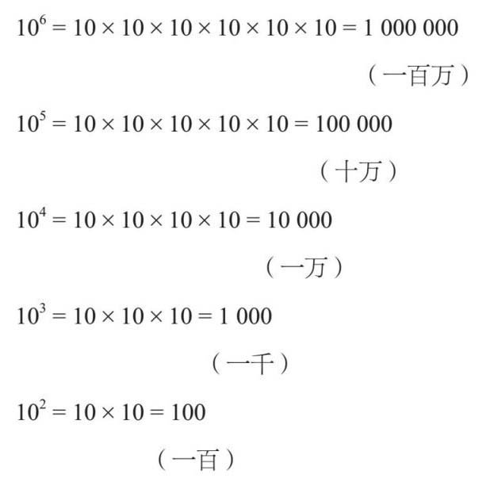
我们会发现10的乘方符合以下的等式：
101 =10（十）
这说明了一个普遍的乘方法则，即任何一个数的一次方就是这个数本身：
a 1 =a
10的乘方用处很大，在英语中人们使用前缀来表示十的几次方。举例来说，“kilo-”代表103 或1 000。因此，1千米（kilometre）是1 000米，1千克（kilogram）是1 000克，1千瓦（kilowatt）是1 000瓦特。大部分前缀表示的是以10的三次方为基准的倍数关系：
103 ：千——kilo——（k）
106 ：百万——mega——（M）
109 ：十亿——giga——（G）
1012 ：万亿——tera——（T）
在上面的例子中，后面几个数量级用来描述计算机的数据处理能力，但我希望在不远的将来，千兆（P, 1015 ）和百万兆（E, 1018 ）的使用也变得很平常。
1920年，美国数学家爱德华·卡斯纳（Edward Kasner）想给一个巨大的数字——10100 取个名字。他9岁的侄子把这个数字叫作“googol”。这个数字特别大，整个宇宙也只有1080 个原子，也就是说googol是1080 的100 000 000 000 000 000 000倍！
如果这还不够大，那还有一个更大的数字——googolplex，也就是googol的googol次方。googol有100个0，而googolplex有googol个0。
数学家们发现，当计算乘方的乘法或除法时，我们可以用两种简便的方法。举例如下：
53 ×54 =(5×5×5)×(5×5×5×5)
括号内的数字是53 和54 的展开式，可以看到答案是7个5相乘，即57 。我们不用把所有的5都写出来，也能很快计算出得数。请注意，数字7等于把两个乘方的次数相加：
53 ×54 =53+4 =57
一般来说，如果把同一个数的不同次乘方相乘，就有下面的规则：
a n ×a m =a n+m
计算乘方的除法时，方法同上。例如：
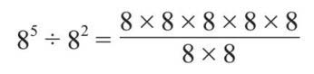
如果我把8消掉，就有：
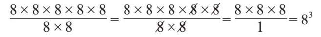
可以看到，最终的结果就是乘方的差值：
85 ÷82 =85–2 =83
或者，我们可以写成：
a n ÷a m =a n–m
这条定律能帮助我们理解零次方所表示的含义。如果计算34 ÷34 ，两个乘方的差值就是：
34 ÷34 =34–4 =30
道理很明显，某个数字除以它本身，结果只能是1，所以30 必须等于1。这推导出另一个定律，那就是任何数的零次方都是：
a0 =1
如果我用上面的办法计算小乘方除以大乘方，那么得到的乘方次数就是负数：
74 ÷79 =74–9 =7–5
下面我把上式写成分数形式：
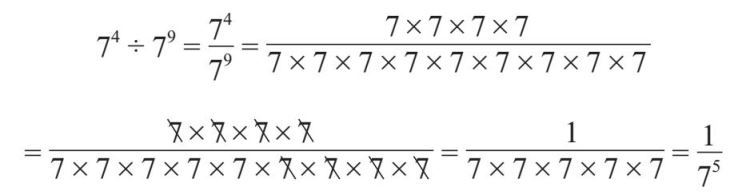
这意味着
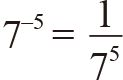
，或者说1被75 除，这个结果值很小。一般来说：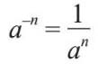
让我们回到10的乘方：
100 =1（一）
10–1 =1/10（十分之一）
10–2 =1/100（百分之一）
10–3 =1/1 000（千分之一）
同样，10的乘方次数为负数的值，也和一些前缀相关：
10–2 ：百分之一——centi——（c）
10–3 ：千分之一——milli——（m）
10–6 ：百万分之一——micro——（μ）
10–9 ：万亿分之一——nano——（n）
如果看一下维生素的药瓶背面，就会发现某些矿物质的计量单位是微克。纳米指的是一个分子的大小，于是便有了“纳米技术”这个词。我们不能认为负数次的乘方所得的结果也是负数。实际上，结果应为小于1的正数。
如果你认为前文的负数次的乘方已经很难掌握，那么分数的乘方可能要更困难了！回忆一下上文提到的公式：a n ×a m =a n-m ，所以有：
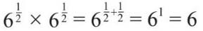
两个
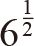
相乘，等于6。这让我们想起之前讲的平方及平方根的部分。当 乘以自身而得6时，它一定是6的平方根：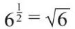
一般情况下，我们知道：
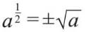
平方根前面如果带了±号，就有了一些细微的区别。当单独描述平方根（即没有±号）时，只指正平方根。但同一个数字也有一个负的平方根，这是因为负数乘以负数得正数（负负得正）：
4×4=16
(–4)×(–4)=16
所以+4和–4都是16的平方根，正负（±）符号也表示答案不唯一。
同理，其他分数次乘方也代表不同的根。某数的
次方相乘三次，结果也会得到这个数，这表示
次方的值与立方根相同：
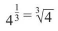
注意，这里没有±号。4的立方根也为正，因为三个负数相乘的结果是负数。例如，我们知道8的立方根是2（因为2×2×2=8），但是(–2)×(–2)×(–2)=–8，而不是8。
一般来说：
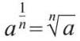
乘方通常用于描述复合单位，这些量本身没有单位。例如，我们把米当作长度单位（通常使用带10次方前缀的一些长度单位，如千米、厘米、毫米等），但是我们用平方米（m2 ）来表示面积。它是一个复合单位，因为没有哪个单独的单位可以表示面积。当然，我们可以用英亩或公顷等单位，避免使用乘方。
有时你也会看到负指数（指数即乘方次数），通常使用“每”（意思是“除以”）这个字来表示。速度就是一个复合单位，一些汽车的仪表板会把每小时的公里数显示为公里·小时–1 （kmh−1 ），而不是公里每小时（kph）。后者是数学意义上的说法（kph只是“公里每小时”的简单表示方法），而前者是公里乘以小时的负一次方：
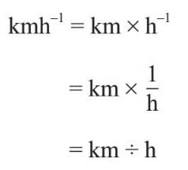
某数的–1次方，等于用1除以这个数字，因此它是一种表示汽车速度单位的简单数学方法。
公顷（hectare）有时被用作面积单位，但很少有人知道它的真实故事。公亩（are）是一个描述土地面积的旧制单位（但仍然是米制单位），1公亩代表边长为10米的一块正方形的土地面积，该单位和其他米制单位在18世纪末法国革命后被一同引入。“hecto-”实际上是一个前缀，表示102 或100。把“hecto”和“are”放在一起，可以组成一个新词——公顷，1公顷等于100×10×10=10 000平方米。1公顷大概等于2.5英亩，相当于一个足球场的大小。
许多非常重要的方程都使用乘方。爱因斯坦的E =mc 2 为核能的发展铺平了道路，牛顿的F =Gm 1 m 2 r -2 可以描述行星的运动。费马大定理涉及希腊数学家丢番图（Diophantus）的方程：a n +b n =c n 。
在本章的开头，我曾说过，乘方或指数可以让我们用很少的数字来表示很大的数字，而技术人员经常用科学计数法来表示它们。科学计数法是指把一个数字表示成一个1~10之间的数乘以10的乘方的形式。例如，真空中的光速（爱因斯坦方程中的c ）为299 792 458米·秒–1 （或米/秒），可以保留到只有一个有效数字，即300 000 000。在这里，我们用10的乘方将其标准化：
300 000 000=3×100 000 000=3×108
这个数字在计算中用起来更方便，我们也不用小心翼翼地输入冗长的原始数字，避免出错。实际上，现代科学计算器有一个“×10x ”键，也是基于这个原因。
牛顿方程中的G 的值是0.000 000 000 066 740 8 m3 kg–1 s–2 ，可以转换为6.7×10–11 。所以，无论是做天文计算还是微观计算，或者只是想区分十亿和百万级别的数字的差别，指数或者乘方都是必备的工具。
体重指数（BMI）的计算公式为：
BMI=质量÷身高2
质量的单位是千克，身高的单位是米。标准健康值为18.5~25千克/米2 。例如，某人身高1.7米，体重70千克，其体重指数就超过了24。这项指标可以提供一个大致的概念，即某人的体重相对于身高来说是否合理，以此作为一个健康方面的依据，来判定是否需要增加或减少体重。很多人都计算过自己的体重指数，特别是在杂志或网上看到相关信息后。然而，易混淆的是人们可能会将身高的平方按乘以2倍计算，如果那样做，就会低估你的体重指数（除非你的身高超过两米），而且身高越矮，体重指数越低。你可能本来只能吃胡萝卜，但因为糟糕的数学知识，却伸手拿了一块蛋糕。